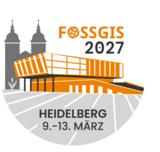

OSGeoLive 17 · FOSSGIS 2027
Heidelberg Edition · audiMAX, 9.-13. März 2027
Schnellzugriff
OSGeoLive-Hilfe und Quickstarts
Übersicht der Geo-Pakete
Beispieldaten
FOSSGIS e.V.
(Netzwerk)
Konferenz 2027 Heidelberg
(Netzwerk)